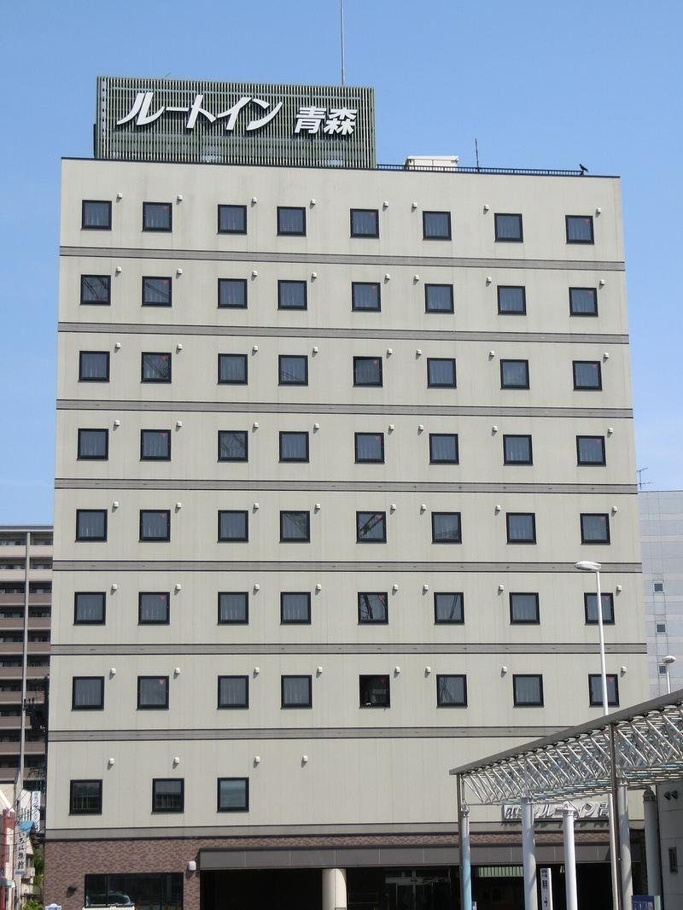
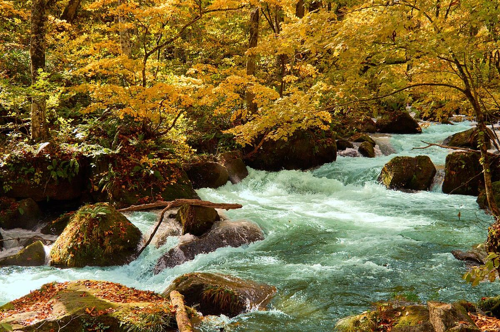
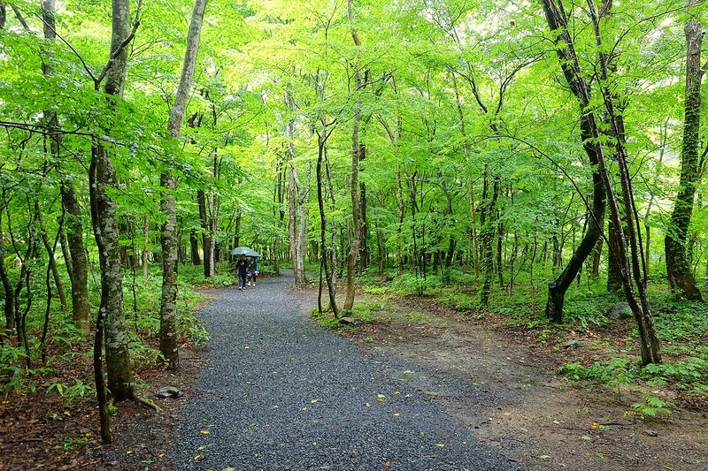
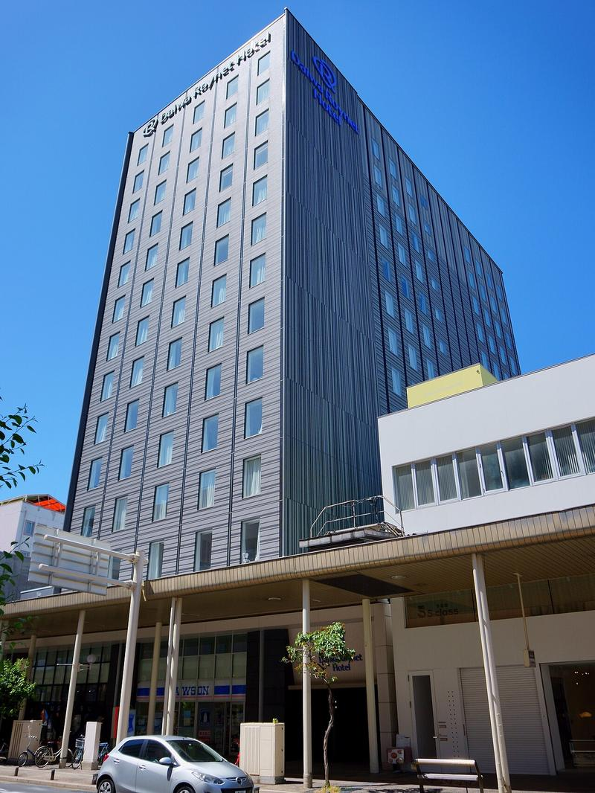

露櫻酒店（Hotel Route Inn）青森站前店 · あばさー · Public domain11/22 已訂
露櫻酒店 青森站前店
抵達夜，青森站步行可到

時間除另註明外皆為日本當地時間。住宿都已訂好，標「建議訂位」的餐廳出發前再處理即可。每日行程中的景點名稱可點開，查看照片與重點介紹。參考圖取自 Wikimedia Commons。

露櫻酒店（Hotel Route Inn）青森站前店 · あばさー · Public domain
星野リゾート 奥入瀬渓流ホテル · Daderot · CC0
青森大和 ROYNET 飯店 · 掬茶 · CC BY-SA 4.0點選日期查看當日動線；景點按鈕可打開照片與重點介紹（餐廳不在此列）
餐廳尚未全部訂位；標「建議訂位」的請出發前處理。
| 日期 | 午餐 | 晚餐 |
|---|---|---|
| 11/22 | 機上 | お食事処おさない（扇貝貝焼味噌定食，約 18:00） |
| 11/23 | 長尾中華そば 青森駅前店 | 星野飯店（方案含晚餐） |
| 11/24 | 石ヶ戸休憩所（蕎麥麵／烏龍麵） | 星野飯店（方案含晚餐） |
| 11/25 | 古川市場 のっけ丼 | 鱒の介（建議訂位） |
| 11/26 | サイゼリヤ ＆LOVINA（求快） | 津軽じょっぱり漁屋酒場（三味線約 19:00，建議訂位） |
| 11/27 | 菊富士本店（建議訂位） | 鮨処あすか 新町店（建議訂位） |
| 11/28 | Galetteria Da Sasino（A-FACTORY 2F；休則改 OCEAN'S DINER） | 機上／回台 |
11/23 為日本勤勞感謝日，店家可能較忙；11/26 午餐僅約一小時緩衝，排隊就改買車站外帶。
單人估算（日幣・大人票）。查證日：2026/11/9，以官方網站為準，實際價格可能變動。不含機票、住宿、餐食（のっけ丼另註）。
| 項目 | 日期 | 單人票價 | 備註 |
|---|---|---|---|
| 機場連絡巴士（青森空港↔青森駅） | 11/22・28 | ¥980／趟 | JRバス東北・約35分；來回各一趟 |
| 睡魔之家 WA・RASSE | 11/22 | ¥620 | 9–18（9–4月）；最終入場17:30 |
| ねぶたん號（美術館・三內丸山） | 11/23 | 一日券 ¥800 | 單次¥300；一日券較划算 |
| 青森縣立美術館（常設／コレクション） | 11/23 | ¥700 | 9:30–17:00；當日有南希関特集，另有志賀理江子企画展可加購套票 |
| 三內丸山遺跡（含さんまる） | 11/23 | ¥400 | 一般¥500；持當日美術館票半券折至¥400。11/23為第4週一但適逢國定假日，休館改至翌日 |
| 星野接送 青森駅↔奧入瀨 | 11/23・25 | ¥3,500／趟 | 住客有料；需2天前預約。4–11月價；溪流接駁另計 |
| 星野溪流接駁（雲井之瀧等） | 11/24 | 住客免費 | 僅限住客；11月末班飯店15:00發、三亂約15:42可搭回 |
| 青函連絡船紀念船 八甲田丸 | 11/25 | ¥510 | 11–3月 9:00–17:00（最終16:30）；冬季週一休 |
| ASPAM | 11/25 | 館內免費 | 13F展望台另計大人¥500（可選） |
| はっこうだ號 青森駅↔纜車站前 | 11/26 | ¥1,290／趟 | JRバス東北；去程青森駅發需網預約，預約料¥300／席（運費另付） |
| 八甲田纜車 | 11/26 | 往復 ¥2,500 | 片道¥1,550；強風停駛可能。冬季最終約15:40 |
| 青い森鐵道 青森↔淺虫溫泉 | 11/26 | ¥540／趟 | 來回各一趟 |
| 淺虫水族館 | 11/26 | ¥1,200 | 最終海豚秀開始10分後入館可減至¥800 |
| JR特急つがる 青森↔弘前（自由席） | 11/27 | ¥1,240／趟 | 含乗車券¥720＋自由席特急¥520；普通車僅運費約¥720（較慢） |
| 弘前循環巴士（土手町循環） | 11/27 | 一日券 ¥600 | 單次現金¥200／IC¥180（2026/10起）；一日券可多次 |
| 弘前公園・本丸 | 11/27 | 免費 | 11/24–翌3/31 本丸免費；天守內部休館中 |
| 青森銀行記念館 | 11/27 | ¥200 | 9:30–16:30；週二休，11/27（五）開館 |
| 舊弘前市立圖書館 | 11/27 | 免費 | 9:00–17:00 |
| 最勝院五重塔 | 11/27 | 免費 | 祭典期間以外免費；菊と紅葉至11/9止 |
| 長勝寺 | 11/27 | 外觀免費 | 導覽拝觀另約¥300（待現場確認） |
| 藤田記念庭園 | 11/27 | 待確認 | 庭園開園至11/23；11/27庭園休。洋館通年開館，當日費用請現場確認 |
| 善知鳥神社 | 11/28 | 免費 | 參拜自由 |
| 古川市場 のっけ丼餐券 | 11/25 | 12枚 ¥2,200 | 餐食估價、不計入下方合計；單枚¥190 |
可參考套票：弘前城＋植物園＋藤田共通券大人¥520（但11/27庭園／植物園已休園，效益低）。美術館當日票半券可折三內丸山。ねぶたん一日券¥800通常優於多次單票。
對外巴士冬季停駛，只能坐星野住客溪流接駁。從三亂之流回飯店末班約 15:42。
需向 JR バス東北預約座位；八甲田纜車遇強風可能停駛。
天守內部休館中；本丸 11/24 起免費。藤田庭園開園僅至 11/23，當日庭園休（洋館通年）。循環巴士約 10:00 起，單次現金 ¥200／一日券 ¥600。
車站 LOVINA／＆LOVINA：無印、GLOBAL WORK。唐吉訶德青森觀光通店與 UNIQLO、GU 在 DREAM TOWN ALi：青森站東口 6 號搭 M35，於 シーナシーナ青森前 下車。
11 月下旬青森／奧入瀨常見約 0–5°C，可能有小雪或零星降雪，木棧道容易濕滑結冰。八甲田已進入積雪季節。
以下照片取自 Wikimedia Commons，依授權標示作者與授權條款。點連結可查看原圖頁面。